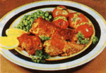

My old man always said, "Huntin' squirrel is easy; just sit out in the woods and act like a nut. "
There are a good many reasons why squirrels are among the most hunted animals in North America. For one thing, the bushy-tail season usually opens before those for larger animals do, and provides an excuse to enjoy the early-autumn woods. Then too, squirrels are more numerous than any other huntable animal except possibly rabbits. Because of this, productive woods are often accessible to youngsters who have to be able to reach their hunting areas by foot. The weapons used for squirrel hunting-and the skills required-also demand less of an investment on the part of beginners, be they young or old. And, finally, squirrel meat has been recognized as a delicious food since long before the first Europeans settled on our shores.
The best way to locate a good squirrel woods is simply to be in the country-hiking, camping, or fishing-before the season begins. Listen for the barks and chatters of those often vocal animals, and keep your eyes peeled for nests and for the gnawed nutshells, pinecones, corncobs, or fungi that indicate squirrels have been feeding.
Once you've located a spot and the season opens (in some parts of the country, squirrels are fair game year-round), your hunt can be as simple or as complicated as you'd like. The back-to-basics approach is simply to dress in comfortable clothes (with a blaze orange vest, in orange camouflage pattern if you prefer, for safety) and set yourself down in a likely-looking grove of trees. The early- to mid-morning and mid- to late-afternoon hours are often the most productive. (Be sure to get permission to hunt if the woods are on private land.)
Most squirrel hunters use either a .22 rifle or a shotgun. If you choose the latter, which will make it possible to shoot running animals, I'd recommend nothing smaller than No. 5 shot. Despite their size, squirrels are hard to kill; for that reason, hunters using a .22 should never shoot at a moving animal, and should always use hard-hitting hollow-point bullets. To do otherwise is to risk watching a wounded animal escape. In any hunting you owe it to your quarry not to shoot unless you're confident of a quick, clean kill.
A variation of the sit-and-wait technique is still-hunting, which involves moving slowly and quietly through the woods, stopping in likely spots for up to half an hour at a time, and keeping your eyes and ears peeled.
Or if you want to get complicated, you can use a call to locate your game, or even invest in a trained squirrel dog (called a fice dog in the South), which will tree squirrels and circle the tree to force a hidden animal to give its position away.
Whatever method you use, keep in mind that a hunted squirrel can remain motionless, and all but invisible, for hours at a time. If you find yourself searching fruitless ly for a squirrel that suddenly disappears, you can follow several courses of action. First, if there's any breeze, look for the movement of blowing fur rather than trying to spot the whole animal. Or if you're with a friend, one of you can sit still while the other circles the tree noisily, perhaps causing the squirrel to move around the trunk to keep the tree between it and the more obvious hunter. If alone, you can try hanging your coat from a limb in view of the tree, then circling the trunk yourself. In fleeing you, the animal may think it's exposed itself to another hunter (the coat), and scoot into your view. Or, finally, you can just plunk yourself down and try to wait the squirrel out. It might take a long time, and you might even run out of day before that squirrel shows itself, but if you've never spent an afternoon sitting motionless in the woods, I can guarantee that you'll see and hear things that are every bit as rewarding as bringing a squirrel home for the pot!
Winnie H. Hodgson
A lot of people dread skinning and cleaning animals. However, there's probably no factor that has more influence on the flavor of wild meat than the speed with which the carcass is cleaned and cooled after the animal is taken. It stands to reason, then, that a quick method of skinning and cleaning will result in better eating and less wasted meat . . . and wasted meat is among the worst possible outcomes of a hunt.
Virginian Dick Charlton recently passed on some squirrel-skining secrets that should help a lot of you eat well this fall. With his technique and a little practice, you'll be able to remove a squirrel's pelt in less than a minute.
Here's how it's done. First-and, Dick notes, this is the most critical step-make a horizontal cut across the underside of the squirrel's tail at the base. Slice through the skin and tailbone, but don't cut the skin on the upper side of the tail. Next, extend that cut, from each of its ends, about an inch down the inside thigh of each hind leg, put the squirrel on the ground, place your foot on the base of the tail, grab the hind legs, and pull slowly. This will peel the hide from the animal's back and around to the middle of its belly, leaving a V-tipped patch of fur on the belly, with its point facing the head.
Continue until you've pulled the skin down over the forelegs and neck. Then use your other hand to slip the front legs out of the skin. With that done, grab the point of the V, pull it toward the squirrel's anus, and skin out the hind legs.
Finally, remove the anus and intestines, cut off the head and feet, and soak the meat in cool, salted water (a tablespoon per quart) for several hours before cooking.
Don't go out on a limb when preparing your first squirrel dinner. This authority on game cooking can help you prepare a memorable meal the first time you try.
Sylvia G. Bashline
3 squirrels, cut into pieces
1 egg
fine bread crumbs
2 tablespoons butter or margarine
2 tablespoons cooking oil
1/2 cup white wine
1/2 cup orange juice
pepper to taste
Dry squirrel pieces on paper towels. Beat egg thoroughly. Dip squirrel in the beaten egg and then roll in bread crumbs. (I use flavored bread crumbs. If you don't, add a little garlic and onion salt and minced parsley and mix well.) Brown squirrel on all sides in hot butter and oil in large frying pan over medium-high heat. Add wine and orange juice to the pan, cover, and turn the heat to simmer. Cook until all the pieces are fork-tender-45 minutes to 1 hour for young squirrels. Turn pieces once during the cooking. Serves 4.
EDITOR'S NOTE: Sylvia is the food editor of Field and Stream magazine. This recipe was excerpted from Sylvia Bashline's Savory Game Cookbook-copyright © 1983 by Sylvia Bashline-with the permission of Stackpole Books. This book is available from Iron Blue Dun Associates (autographed copies), Spruce Creek, PA 16683, for $15.50 postpaid, and from Stackpole Books, Cameron and Kelker Sts., P.O. Box 1831, Harrisburg, PA 17105, for $13.95 plus $2.50 postage and handling.
|
 |
|
|